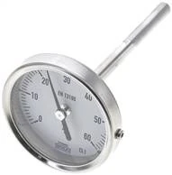

Nhà cung cấp WIKA · Bimetal thermometer
Đồng hồ nhiệt độ WIKA tại Việt Nam
Tra mã và báo giá nhiệt kế WIKA, bimetal thermometer WIKA, temperature gauge, PT100 và phụ kiện thermowell theo dải nhiệt, đường kính mặt, chiều dài que đo và kiểu lắp đặt.
0-120°Cdải nhiệt phổ biến cho máy và đường ống
0-160°Ctừ khóa tốt cho dầu, nước nóng, hệ HVAC
63 · 100mmđường kính mặt nên đưa vào bảng lọc
L=100chiều dài que đo rất quan trọng khi thay thế
Chọn đúng nhiệt kế
Khách tìm đồng hồ nhiệt độ WIKA thường gõ theo dải °C và chiều dài que đo
Các cụm nên đánh mạnh: đồng hồ nhiệt độ WIKA 0-120°C, WIKA bimetal thermometer 100mm, nhiệt kế WIKA que 160mm, temperature gauge WIKA, PT100 WIKA, nhà cung cấp WIKA tại Việt Nam.
Mã tiêu biểu
Mã thiết bị đo nhiệt độ WIKA tiêu biểu
Một số mã thông dụng nhất — bấm Chi tiết để xem đầy đủ thông số, ảnh và gửi báo giá. Xem toàn bộ mã theo nhóm ở phần bên dưới.
Danh mục đầy đủ
Toàn bộ mã Đồng hồ nhiệt độ WIKA (814 mã, 14 nhóm)
Bấm vào từng mã để xem thông số, ảnh và gửi RFQ. Các mã được gom theo nhóm sản phẩm để dễ đối chiếu dải đo và kích thước.
Đồng hồ nhiệt độ lưỡng kim lắp ngang không ống bảo vệ - phiên bản công nghiệp, cấp chính xác 1, 0
176 mã · nhóm TW3563
WIKA TW 356363 (-30 bis +50)WIKA TW 3563100 (-30 bis +50)WIKA TW 3563160 (-30 bis +50)WIKA TW 3563200 (-30 bis +50)WIKA TW 606363 (0 bis +60)WIKA TW 6063100 (0 bis +60)WIKA TW 6063160 (0 bis +60)WIKA TW 6063200 (0 bis +60)WIKA TW 806363 (0 bis +80)WIKA TW 8063100 (0 bis +80)WIKA TW 8063160 (0 bis +80)WIKA TW 8063200 (0 bis +80)WIKA TW 1006363 (0 bis +100)WIKA TW 10063100 (0 bis +100)WIKA TW 10063160 (0 bis +100)WIKA TW 10063200 (0 bis +100)WIKA TW 1206363 (0 bis +120)WIKA TW 12063100 (0 bis +120)WIKA TW 12063160 (0 bis +120)WIKA TW 12063200 (0 bis +120)WIKA TW 1606363 (0 bis +160)WIKA TW 16063100 (0 bis +160)WIKA TW 16063160 (0 bis +160)WIKA TW 16063200 (0 bis +160)WIKA TW 2006363 (0 bis +200)WIKA TW 20063100 (0 bis +200)WIKA TW 20063160 (0 bis +200)WIKA TW 20063200 (0 bis +200)WIKA TW 2506363 (0 bis +250)WIKA TW 25063100 (0 bis +250)WIKA TW 25063160 (0 bis +250)WIKA TW 25063200 (0 bis +250)WIKA TW 3006363 (0 bis +300)WIKA TW 30063100 (0 bis +300)WIKA TW 30063160 (0 bis +300)WIKA TW 30063200 (0 bis +300)WIKA TW 4006363 (0 bis +400)WIKA TW 40063100 (0 bis +400)WIKA TW 40063160 (0 bis +400)WIKA TW 40063200 (0 bis +400)WIKA TW 5006363 (0 bis +500)WIKA TW 50063100 (0 bis +500)WIKA TW 50063160 (0 bis +500)WIKA TW 50063200 (0 bis +500)WIKA TW 358063 (-30 bis +50)WIKA TW 3580100 (-30 bis +50)WIKA TW 3580160 (-30 bis +50)WIKA TW 3580200 (-30 bis +50)WIKA TW 608063 (0 bis +60)WIKA TW 6080100 (0 bis +60)WIKA TW 6080160 (0 bis +60)WIKA TW 6080200 (0 bis +60)WIKA TW 808063 (0 bis +80)WIKA TW 8080100 (0 bis +80)WIKA TW 8080160 (0 bis +80)WIKA TW 8080200 (0 bis +80)WIKA TW 1008063 (0 bis +100)WIKA TW 10080100 (0 bis +100)WIKA TW 10080160 (0 bis +100)WIKA TW 10080200 (0 bis +100)WIKA TW 1208063 (0 bis +120)WIKA TW 12080100 (0 bis +120)WIKA TW 12080160 (0 bis +120)WIKA TW 12080200 (0 bis +120)WIKA TW 1608063 (0 bis +160)WIKA TW 16080100 (0 bis +160)WIKA TW 16080160 (0 bis +160)WIKA TW 16080200 (0 bis +160)WIKA TW 2008063 (0 bis +200)WIKA TW 20080100 (0 bis +200)WIKA TW 20080160 (0 bis +200)WIKA TW 20080200 (0 bis +200)WIKA TW 2508063 (0 bis +250)WIKA TW 25080100 (0 bis +250)WIKA TW 25080160 (0 bis +250)WIKA TW 25080200 (0 bis +250)WIKA TW 3008063 (0 bis +300)WIKA TW 30080100 (0 bis +300)WIKA TW 30080160 (0 bis +300)WIKA TW 30080200 (0 bis +300)WIKA TW 4008063 (0 bis +400)WIKA TW 40080100 (0 bis +400)WIKA TW 40080160 (0 bis +400)WIKA TW 40080200 (0 bis +400)WIKA TW 5008063 (0 bis +500)WIKA TW 50080100 (0 bis +500)WIKA TW 50080160 (0 bis +500)WIKA TW 50080200 (0 bis +500)WIKA TW 3510063 (-30 bis +50)WIKA TW 35100100 (-30 bis +50)WIKA TW 35100160 (-30 bis +50)WIKA TW 35100200 (-30 bis +50)WIKA TW 6010063 (0 bis +60)WIKA TW 60100100 (0 bis +60)WIKA TW 60100160 (0 bis +60)WIKA TW 60100200 (0 bis +60)WIKA TW 8010063 (0 bis +80)WIKA TW 80100100 (0 bis +80)WIKA TW 80100160 (0 bis +80)WIKA TW 80100200 (0 bis +80)WIKA TW 10010063 (0 bis +100)WIKA TW 100100100 (0 bis +100)WIKA TW 100100160 (0 bis +100)WIKA TW 100100200 (0 bis +100)WIKA TW 12010063 (0 bis +120)WIKA TW 120100100 (0 bis +120)WIKA TW 120100160 (0 bis +120)WIKA TW 120100200 (0 bis +120)WIKA TW 16010063 (0 bis +160)WIKA TW 160100100 (0 bis +160)WIKA TW 160100160 (0 bis +160)WIKA TW 160100200 (0 bis +160)WIKA TW 20010063 (0 bis +200)WIKA TW 200100100 (0 bis +200)WIKA TW 200100160 (0 bis +200)WIKA TW 200100200 (0 bis +200)WIKA TW 25010063 (0 bis +250)WIKA TW 250100100 (0 bis +250)WIKA TW 250100160 (0 bis +250)WIKA TW 250100200 (0 bis +250)WIKA TW 30010063 (0 bis +300)WIKA TW 300100100 (0 bis +300)WIKA TW 300100160 (0 bis +300)WIKA TW 300100200 (0 bis +300)WIKA TW 40010063 (0 bis +400)WIKA TW 400100100 (0 bis +400)WIKA TW 400100160 (0 bis +400)WIKA TW 400100200 (0 bis +400)WIKA TW 50010063 (0 bis +500)WIKA TW 500100100 (0 bis +500)WIKA TW 500100160 (0 bis +500)WIKA TW 500100200 (0 bis +500)WIKA TW 3516063 (-30 bis +50)WIKA TW 35160100 (-30 bis +50)WIKA TW 35160160 (-30 bis +50)WIKA TW 35160200 (-30 bis +50)WIKA TW 6016063 (0 bis +60)WIKA TW 60160100 (0 bis +60)WIKA TW 60160160 (0 bis +60)WIKA TW 60160200 (0 bis +60)WIKA TW 8016063 (0 bis +80)WIKA TW 80160100 (0 bis +80)WIKA TW 80160160 (0 bis +80)WIKA TW 80160200 (0 bis +80)WIKA TW 10016063 (0 bis +100)WIKA TW 100160100 (0 bis +100)WIKA TW 100160160 (0 bis +100)WIKA TW 100160200 (0 bis +100)WIKA TW 12016063 (0 bis +120)WIKA TW 120160100 (0 bis +120)WIKA TW 120160160 (0 bis +120)WIKA TW 120160200 (0 bis +120)WIKA TW 16016063 (0 bis +160)WIKA TW 160160100 (0 bis +160)WIKA TW 160160160 (0 bis +160)WIKA TW 160160200 (0 bis +160)WIKA TW 20016063 (0 bis +200)WIKA TW 200160100 (0 bis +200)WIKA TW 200160160 (0 bis +200)WIKA TW 200160200 (0 bis +200)WIKA TW 25016063 (0 bis +250)WIKA TW 250160100 (0 bis +250)WIKA TW 250160160 (0 bis +250)WIKA TW 250160200 (0 bis +250)WIKA TW 30016063 (0 bis +300)WIKA TW 300160100 (0 bis +300)WIKA TW 300160160 (0 bis +300)WIKA TW 300160200 (0 bis +300)WIKA TW 40016063 (0 bis +400)WIKA TW 400160100 (0 bis +400)WIKA TW 400160160 (0 bis +400)WIKA TW 400160200 (0 bis +400)WIKA TW 50016063 (0 bis +500)WIKA TW 500160100 (0 bis +500)WIKA TW 500160160 (0 bis +500)WIKA TW 500160200 (0 bis +500)
Nhiệt kế thủy tinh công nghiệp, cấp chính xác 1, 0
140 mã · nhóm SITS64150
WIKA SITS 6415063 (-60 bis +40)WIKA SITS 64150100 (-60 bis +40)WIKA SITS 64150160 (-60 bis +40)WIKA SITS 64150250 (-60 bis +40)WIKA SITS 64150400 (-60 bis +40)WIKA SITS 3515063 (-30 bis +50)WIKA SITS 35150100 (-30 bis +50)WIKA SITS 35150160 (-30 bis +50)WIKA SITS 35150250 (-30 bis +50)WIKA SITS 35150400 (-30 bis +50)WIKA SITS 6015063 (0 bis +60)WIKA SITS 60150100 (0 bis +60)WIKA SITS 60150160 (0 bis +60)WIKA SITS 60150250 (0 bis +60)WIKA SITS 60150400 (0 bis +60)WIKA SITS 10015063 (0 bis +100)WIKA SITS 100150100 (0 bis +100)WIKA SITS 100150160 (0 bis +100)WIKA SITS 100150250 (0 bis +100)WIKA SITS 100150400 (0 bis +100)WIKA SITS 12015063 (0 bis +120)WIKA SITS 120150100 (0 bis +120)WIKA SITS 120150160 (0 bis +120)WIKA SITS 120150250 (0 bis +120)WIKA SITS 120150400 (0 bis +120)WIKA SITS 16015063 (0 bis +160)WIKA SITS 160150100 (0 bis +160)WIKA SITS 160150160 (0 bis +160)WIKA SITS 160150250 (0 bis +160)WIKA SITS 160150400 (0 bis +160)WIKA SITS 20015063 (0 bis +200)WIKA SITS 200150100 (0 bis +200)WIKA SITS 200150160 (0 bis +200)WIKA SITS 200150250 (0 bis +200)WIKA SITS 200150400 (0 bis +200)WIKA SITW 6415063 (-60 bis +40)WIKA SITW 64150100 (-60 bis +40)WIKA SITW 64150160 (-60 bis +40)WIKA SITW 64150250 (-60 bis +40)WIKA SITW 64150400 (-60 bis +40)WIKA SITW 3515063 (-30 bis +50)WIKA SITW 35150100 (-30 bis +50)WIKA SITW 35150160 (-30 bis +50)WIKA SITW 35150250 (-30 bis +50)WIKA SITW 35150400 (-30 bis +50)WIKA SITW 6015063 (0 bis +60)WIKA SITW 60150100 (0 bis +60)WIKA SITW 60150160 (0 bis +60)WIKA SITW 60150250 (0 bis +60)WIKA SITW 60150400 (0 bis +60)WIKA SITW 10015063 (0 bis +100)WIKA SITW 100150100 (0 bis +100)WIKA SITW 100150160 (0 bis +100)WIKA SITW 100150250 (0 bis +100)WIKA SITW 100150400 (0 bis +100)WIKA SITW 12015063 (0 bis +120)WIKA SITW 120150100 (0 bis +120)WIKA SITW 120150160 (0 bis +120)WIKA SITW 120150250 (0 bis +120)WIKA SITW 120150400 (0 bis +120)WIKA SITW 16015063 (0 bis +160)WIKA SITW 160150100 (0 bis +160)WIKA SITW 160150160 (0 bis +160)WIKA SITW 160150250 (0 bis +160)WIKA SITW 160150400 (0 bis +160)WIKA SITW 20015063 (0 bis +200)WIKA SITW 200150100 (0 bis +200)WIKA SITW 200150160 (0 bis +200)WIKA SITW 200150250 (0 bis +200)WIKA SITW 200150400 (0 bis +200)WIKA SITS 6420063 (-60 bis +40)WIKA SITS 64200100 (-60 bis +40)WIKA SITS 64200160 (-60 bis +40)WIKA SITS 64200250 (-60 bis +40)WIKA SITS 64200400 (-60 bis +40)WIKA SITS 3520063 (-30 bis +50)WIKA SITS 35200100 (-30 bis +50)WIKA SITS 35200160 (-30 bis +50)WIKA SITS 35200250 (-30 bis +50)WIKA SITS 35200400 (-30 bis +50)WIKA SITS 6020063 (0 bis +60)WIKA SITS 60200100 (0 bis +60)WIKA SITS 60200160 (0 bis +60)WIKA SITS 60200250 (0 bis +60)WIKA SITS 60200400 (0 bis +60)WIKA SITS 10020063 (0 bis +100)WIKA SITS 100200100 (0 bis +100)WIKA SITS 100200160 (0 bis +100)WIKA SITS 100200250 (0 bis +100)WIKA SITS 100200400 (0 bis +100)WIKA SITS 12020063 (0 bis +120)WIKA SITS 120200100 (0 bis +120)WIKA SITS 120200160 (0 bis +120)WIKA SITS 120200250 (0 bis +120)WIKA SITS 120200400 (0 bis +120)WIKA SITS 16020063 (0 bis +160)WIKA SITS 160200100 (0 bis +160)WIKA SITS 160200160 (0 bis +160)WIKA SITS 160200250 (0 bis +160)WIKA SITS 160200400 (0 bis +160)WIKA SITS 20020063 (0 bis +200)WIKA SITS 200200100 (0 bis +200)WIKA SITS 200200160 (0 bis +200)WIKA SITS 200200250 (0 bis +200)WIKA SITS 200200400 (0 bis +200)WIKA SITW 6420063 (-60 bis +40)WIKA SITW 64200100 (-60 bis +40)WIKA SITW 64200160 (-60 bis +40)WIKA SITW 64200250 (-60 bis +40)WIKA SITW 64200400 (-60 bis +40)WIKA SITW 3520063 (-30 bis +50)WIKA SITW 35200100 (-30 bis +50)WIKA SITW 35200160 (-30 bis +50)WIKA SITW 35200250 (-30 bis +50)WIKA SITW 35200400 (-30 bis +50)WIKA SITW 6020063 (0 bis +60)WIKA SITW 60200100 (0 bis +60)WIKA SITW 60200160 (0 bis +60)WIKA SITW 60200250 (0 bis +60)WIKA SITW 60200400 (0 bis +60)WIKA SITW 10020063 (0 bis +100)WIKA SITW 100200100 (0 bis +100)WIKA SITW 100200160 (0 bis +100)WIKA SITW 100200250 (0 bis +100)WIKA SITW 100200400 (0 bis +100)WIKA SITW 12020063 (0 bis +120)WIKA SITW 120200100 (0 bis +120)WIKA SITW 120200160 (0 bis +120)WIKA SITW 120200250 (0 bis +120)WIKA SITW 120200400 (0 bis +120)WIKA SITW 16020063 (0 bis +160)WIKA SITW 160200100 (0 bis +160)WIKA SITW 160200160 (0 bis +160)WIKA SITW 160200250 (0 bis +160)WIKA SITW 160200400 (0 bis +160)WIKA SITW 20020063 (0 bis +200)WIKA SITW 200200100 (0 bis +200)WIKA SITW 200200160 (0 bis +200)WIKA SITW 200200250 (0 bis +200)WIKA SITW 200200400 (0 bis +200)
Đồng hồ nhiệt độ lưỡng kim lắp đứng không ống bảo vệ - phiên bản hóa chất, cấp chính xác 1, 0
112 mã · nhóm TS5563ES
WIKA TS 556363 ES (-50 bis +50)WIKA TS 5563100 ES (-50 bis +50)WIKA TS 5563160 ES (-50 bis +50)WIKA TS 5563200 ES (-50 bis +50)WIKA TS 356363 ES (-30 bis +50)WIKA TS 3563100 ES (-30 bis +50)WIKA TS 3563160 ES (-30 bis +50)WIKA TS 3563200 ES (-30 bis +50)WIKA TS 266363 ES (-20 bis +60)WIKA TS 2663100 ES (-20 bis +60)WIKA TS 2663160 ES (-20 bis +60)WIKA TS 2663200 ES (-20 bis +60)WIKA TS 606363 ES (0 bis +60)WIKA TS 6063100 ES (0 bis +60)WIKA TS 6063160 ES (0 bis +60)WIKA TS 6063200 ES (0 bis +60)WIKA TS 806363 ES (0 bis +80)WIKA TS 8063100 ES (0 bis +80)WIKA TS 8063160 ES (0 bis +80)WIKA TS 8063200 ES (0 bis +80)WIKA TS 1006363 ES (0 bis +100)WIKA TS 10063100 ES (0 bis +100)WIKA TS 10063160 ES (0 bis +100)WIKA TS 10063200 ES (0 bis +100)WIKA TS 1206363 ES (0 bis +120)WIKA TS 12063100 ES (0 bis +120)WIKA TS 12063160 ES (0 bis +120)WIKA TS 12063200 ES (0 bis +120)WIKA TS 1606363 ES (0 bis +160)WIKA TS 16063100 ES (0 bis +160)WIKA TS 16063160 ES (0 bis +160)WIKA TS 16063200 ES (0 bis +160)WIKA TS 2006363 ES (0 bis +200)WIKA TS 20063100 ES (0 bis +200)WIKA TS 20063160 ES (0 bis +200)WIKA TS 20063200 ES (0 bis +200)WIKA TS 2506363 ES (0 bis +250)WIKA TS 25063100 ES (0 bis +250)WIKA TS 25063160 ES (0 bis +250)WIKA TS 25063200 ES (0 bis +250)WIKA TS 3006363 ES (0 bis +300)WIKA TS 30063100 ES (0 bis +300)WIKA TS 30063160 ES (0 bis +300)WIKA TS 30063200 ES (0 bis +300)WIKA TS 4006363 ES (0 bis +400)WIKA TS 40063100 ES (0 bis +400)WIKA TS 40063160 ES (0 bis +400)WIKA TS 40063200 ES (0 bis +400)WIKA TS 5006363 ES (0 bis +500)WIKA TS 50063100 ES (0 bis +500)WIKA TS 50063160 ES (0 bis +500)WIKA TS 50063200 ES (0 bis +500)WIKA TS 6006363 ES (0 bis +600)WIKA TS 60063100 ES (0 bis +600)WIKA TS 60063160 ES (0 bis +600)WIKA TS 60063200 ES (0 bis +600)WIKA TS 5510063 ES (-50 bis +50)WIKA TS 55100100 ES (-50 bis +50)WIKA TS 55100160 ES (-50 bis +50)WIKA TS 55100200 ES (-50 bis +50)WIKA TS 3510063 ES (-30 bis +50)WIKA TS 35100100 ES (-30 bis +50)WIKA TS 35100160 ES (-30 bis +50)WIKA TS 35100200 ES (-30 bis +50)WIKA TS 2610063 ES (-20 bis +60)WIKA TS 26100100 ES (-20 bis +60)WIKA TS 26100160 ES (-20 bis +60)WIKA TS 26100200 ES (-20 bis +60)WIKA TS 6010063 ES (0 bis +60)WIKA TS 60100100 ES (0 bis +60)WIKA TS 60100160 ES (0 bis +60)WIKA TS 60100200 ES (0 bis +60)WIKA TS 8010063 ES (0 bis +80)WIKA TS 80100100 ES (0 bis +80)WIKA TS 80100160 ES (0 bis +80)WIKA TS 80100200 ES (0 bis +80)WIKA TS 10010063 ES (0 bis +100)WIKA TS 100100100 ES (0 bis +100)WIKA TS 100100160 ES (0 bis +100)WIKA TS 100100200 ES (0 bis +100)WIKA TS 12010063 ES (0 bis +120)WIKA TS 120100100 ES (0 bis +120)WIKA TS 120100160 ES (0 bis +120)WIKA TS 120100200 ES (0 bis +120)WIKA TS 16010063 ES (0 bis +160)WIKA TS 160100100 ES (0 bis +160)WIKA TS 160100160 ES (0 bis +160)WIKA TS 160100200 ES (0 bis +160)WIKA TS 20010063 ES (0 bis +200)WIKA TS 200100100 ES (0 bis +200)WIKA TS 200100160 ES (0 bis +200)WIKA TS 200100200 ES (0 bis +200)WIKA TS 25010063 ES (0 bis +250)WIKA TS 250100100 ES (0 bis +250)WIKA TS 250100160 ES (0 bis +250)WIKA TS 250100200 ES (0 bis +250)WIKA TS 30010063 ES (0 bis +300)WIKA TS 300100100 ES (0 bis +300)WIKA TS 300100160 ES (0 bis +300)WIKA TS 300100200 ES (0 bis +300)WIKA TS 40010063 ES (0 bis +400)WIKA TS 400100100 ES (0 bis +400)WIKA TS 400100160 ES (0 bis +400)WIKA TS 400100200 ES (0 bis +400)WIKA TS 50010063 ES (0 bis +500)WIKA TS 500100100 ES (0 bis +500)WIKA TS 500100160 ES (0 bis +500)WIKA TS 500100200 ES (0 bis +500)WIKA TS 60010063 ES (0 bis +600)WIKA TS 600100100 ES (0 bis +600)WIKA TS 600100160 ES (0 bis +600)WIKA TS 600100200 ES (0 bis +600)
Đồng hồ nhiệt độ lưỡng kim lắp ngang không ống bảo vệ - phiên bản hóa chất, cấp chính xác 1, 0
110 mã · nhóm TW5563ES
WIKA TW 556363 ES (-50 bis +50)WIKA TW 5563100 ES (-50 bis +50)WIKA TW 5563160 ES (-50 bis +50)WIKA TW 5563200 ES (-50 bis +50)WIKA TW 356363 ES (-30 bis +50)WIKA TW 3563100 ES (-30 bis +50)WIKA TW 3563160 ES (-30 bis +50)WIKA TW 3563200 ES (-30 bis +50)WIKA TW 266363 ES (-20 bis +60)WIKA TW 2663100 ES (-20 bis +60)WIKA TW 2663160 ES (-20 bis +60)WIKA TW 2663200 ES (-20 bis +60)WIKA TW 606363 ES (0 bis +60)WIKA TW 6063100 ES (0 bis +60)WIKA TW 6063160 ES (0 bis +60)WIKA TW 6063200 ES (0 bis +60)WIKA TW 806363 ES (0 bis +80)WIKA TW 8063100 ES (0 bis +80)WIKA TW 8063160 ES (0 bis +80)WIKA TW 8063200 ES (0 bis +80)WIKA TW 1006363 ES (0 bis +100)WIKA TW 10063100 ES (0 bis +100)WIKA TW 10063160 ES (0 bis +100)WIKA TW 10063200 ES (0 bis +100)WIKA TW 1206363 ES (0 bis +120)WIKA TW 12063100 ES (0 bis +120)WIKA TW 12063160 ES (0 bis +120)WIKA TW 12063200 ES (0 bis +120)WIKA TW 1606363 ES (0 bis +160)WIKA TW 16063100 ES (0 bis +160)WIKA TW 16063160 ES (0 bis +160)WIKA TW 16063200 ES (0 bis +160)WIKA TW 2006363 ES (0 bis +200)WIKA TW 20063100 ES (0 bis +200)WIKA TW 20063160 ES (0 bis +200)WIKA TW 20063200 ES (0 bis +200)WIKA TW 2506363 ES (0 bis +250)WIKA TW 25063100 ES (0 bis +250)WIKA TW 25063160 ES (0 bis +250)WIKA TW 25063200 ES (0 bis +250)WIKA TW 3006363 ES (0 bis +300)WIKA TW 30063100 ES (0 bis +300)WIKA TW 30063160 ES (0 bis +300)WIKA TW 30063200 ES (0 bis +300)WIKA TW 4006363 ES (0 bis +400)WIKA TW 40063100 ES (0 bis +400)WIKA TW 40063160 ES (0 bis +400)WIKA TW 40063200 ES (0 bis +400)WIKA TW 5006363 ES (0 bis +500)WIKA TW 50063100 ES (0 bis +500)WIKA TW 50063160 ES (0 bis +500)WIKA TW 50063200 ES (0 bis +500)WIKA TW 6006363 ES (0 bis +600)WIKA TW 60063100 ES (0 bis +600)WIKA TW 60063160 ES (0 bis +600)WIKA TW 60063200 ES (0 bis +600)WIKA TW 5510063 ES (-50 bis +50)WIKA TW 55100100 ES (-50 bis +50)WIKA TW 55100160 ES (-50 bis +50)WIKA TW 55100200 ES (-50 bis +50)WIKA TW 3510063 ES (-30 bis +50)WIKA TW 35100100 ES (-30 bis +50)WIKA TW 35100160 ES (-30 bis +50)WIKA TW 35100200 ES (-30 bis +50)WIKA TW 2610063 ES (-20 bis +60)WIKA TW 26100100 ES (-20 bis +60)WIKA TW 26100160 ES (-20 bis +60)WIKA TW 26100200 ES (-20 bis +60)WIKA TW 6010063 ES (0 bis +60)WIKA TW 60100100 ES (0 bis +60)WIKA TW 60100160 ES (0 bis +60)WIKA TW 60100200 ES (0 bis +60)WIKA TW 8010063 ES (0 bis +80)WIKA TW 80100100 ES (0 bis +80)WIKA TW 80100160 ES (0 bis +80)WIKA TW 80100200 ES (0 bis +80)WIKA TW 10010063 ES (0 bis +100)WIKA TW 100100100 ES (0 bis +100)WIKA TW 100100160 ES (0 bis +100)WIKA TW 100100200 ES (0 bis +100)WIKA TW 12010063 ES (0 bis +120)WIKA TW 120100100 ES (0 bis +120)WIKA TW 120100160 ES (0 bis +120)WIKA TW 120100200 ES (0 bis +120)WIKA TW 16010063 ES (0 bis +160)WIKA TW 160100100 ES (0 bis +160)WIKA TW 160100160 ES (0 bis +160)WIKA TW 160100200 ES (0 bis +160)WIKA TW 20010063 ES (0 bis +200)WIKA TW 200100100 ES (0 bis +200)WIKA TW 200100160 ES (0 bis +200)WIKA TW 200100200 ES (0 bis +200)WIKA TW 25010063 ES (0 bis +250)WIKA TW 250100100 ES (0 bis +250)WIKA TW 250100160 ES (0 bis +250)WIKA TW 250100200 ES (0 bis +250)WIKA TW 300100160 ES (0 bis +300)WIKA TW 300100200 ES (0 bis +300)WIKA TW 40010063 ES (0 bis +400)WIKA TW 400100100 ES (0 bis +400)WIKA TW 400100160 ES (0 bis +400)WIKA TW 400100200 ES (0 bis +400)WIKA TW 50010063 ES (0 bis +500)WIKA TW 500100100 ES (0 bis +500)WIKA TW 500100160 ES (0 bis +500)WIKA TW 500100200 ES (0 bis +500)WIKA TW 60010063 ES (0 bis +600)WIKA TW 600100100 ES (0 bis +600)WIKA TW 600100160 ES (0 bis +600)WIKA TW 600100200 ES (0 bis +600)
Đồng hồ nhiệt độ lưỡng kim lắp ngang không ống bảo vệ, 18 mm cổ ren, cấp chính xác 1, 0
66 mã · nhóm TWT3563ES
WIKA TWT 356363 ES (-30 bis +50)WIKA TWT 3563100 ES (-30 bis +50)WIKA TWT 3563160 ES (-30 bis +50)WIKA TWT 3563200 ES (-30 bis +50)WIKA TWT 266363 ES (-20 bis +60)WIKA TWT 2663100 ES (-20 bis +60)WIKA TWT 2663160 ES (-20 bis +60)WIKA TWT 2663200 ES (-20 bis +60)WIKA TWT 606363 ES (0 bis +60)WIKA TWT 6063100 ES (0 bis +60)WIKA TWT 6063160 ES (0 bis +60)WIKA TWT 6063200 ES (0 bis +60)WIKA TWT 806363 ES (0 bis +80)WIKA TWT 8063100 ES (0 bis +80)WIKA TWT 8063160 ES (0 bis +80)WIKA TWT 8063200 ES (0 bis +80)WIKA TWT 1206363 ES (0 bis +120)WIKA TWT 12063100 ES (0 bis +120)WIKA TWT 12063160 ES (0 bis +120)WIKA TWT 12063200 ES (0 bis +120)WIKA TWT 1606363 ES (0 bis +160)WIKA TWT 16063100 ES (0 bis +160)WIKA TWT 16063160 ES (0 bis +160)WIKA TWT 16063200 ES (0 bis +160)WIKA TWT 2006363 ES (0 bis +200)WIKA TWT 20063100 ES (0 bis +200)WIKA TWT 20063160 ES (0 bis +200)WIKA TWT 20063200 ES (0 bis +200)WIKA TWT 2506363 ES (0 bis +250)WIKA TWT 25063100 ES (0 bis +250)WIKA TWT 25063160 ES (0 bis +250)WIKA TWT 25063200 ES (0 bis +250)WIKA TWT 3510063 ES (-30 bis +50)WIKA TWT 35100100 ES (-30 bis +50)WIKA TWT 35100160 ES (-30 bis +50)WIKA TWT 35100200 ES (-30 bis +50)WIKA TWT 2610063 ES (-20 bis +60)WIKA TWT 26100100 ES (-20 bis +60)WIKA TWT 26100160 ES (-20 bis +60)WIKA TWT 26100200 ES (-20 bis +60)WIKA TWT 6010063 ES (0 bis +60)WIKA TWT 60100100 ES (0 bis +60)WIKA TWT 60100160 ES (0 bis +60)WIKA TWT 60100200 ES (0 bis +60)WIKA TWT 60100400 ES (0 bis +60)WIKA TWT 8010063 ES (0 bis +80)WIKA TWT 80100100 ES (0 bis +80)WIKA TWT 80100160 ES (0 bis +80)WIKA TWT 80100200 ES (0 bis +80)WIKA TWT 12010063 ES (0 bis +120)WIKA TWT 120100100 ES (0 bis +120)WIKA TWT 120100160 ES (0 bis +120)WIKA TWT 120100200 ES (0 bis +120)WIKA TWT 16010063 ES (0 bis +160)WIKA TWT 160100100 ES (0 bis +160)WIKA TWT 160100160 ES (0 bis +160)WIKA TWT 160100200 ES (0 bis +160)WIKA TWT 20010063 ES (0 bis +200)WIKA TWT 200100100 ES (0 bis +200)WIKA TWT 200100160 ES (0 bis +200)WIKA TWT 200100200 ES (0 bis +200)WIKA TWT 25010063 ES (0 bis +250)WIKA TWT 250100100 ES (0 bis +250)WIKA TWT 250100160 ES (0 bis +250)WIKA TWT 250100200 ES (0 bis +250)WIKA TWT 26160160 ES (-20 bis +60)
Đồng hồ nhiệt độ lưỡng kim lắp đứng không ống bảo vệ - phiên bản công nghiệp, cấp chính xác 1, 0
63 mã · nhóm TS35100
WIKA TS 3510063 (-30 bis +50)WIKA TS 35100100 (-30 bis +50)WIKA TS 35100160 (-30 bis +50)WIKA TS 35100200 (-30 bis +50)WIKA TS 60100100 (0 bis +60)WIKA TS 60100160 (0 bis +60)WIKA TS 60100200 (0 bis +60)WIKA TS 8010063 (0 bis +80)WIKA TS 80100100 (0 bis +80)WIKA TS 80100160 (0 bis +80)WIKA TS 80100200 (0 bis +80)WIKA TS 10010063 (0 bis +100)WIKA TS 100100100 (0 bis +100)WIKA TS 100100160 (0 bis +100)WIKA TS 100100200 (0 bis +100)WIKA TS 12010063 (0 bis +120)WIKA TS 120100100 (0 bis +120)WIKA TS 120100160 (0 bis +120)WIKA TS 120100200 (0 bis +120)WIKA TS 120100400 (0 bis +120)WIKA TS 16010063 (0 bis +160)WIKA TS 160100100 (0 bis +160)WIKA TS 160100160 (0 bis +160)WIKA TS 160100200 (0 bis +160)WIKA TS 20010063 (0 bis +200)WIKA TS 200100100 (0 bis +200)WIKA TS 200100160 (0 bis +200)WIKA TS 200100200 (0 bis +200)WIKA TS 25010063 (0 bis +250)WIKA TS 250100100 (0 bis +250)WIKA TS 250100160 (0 bis +250)WIKA TS 250100200 (0 bis +250)WIKA TS 3516063 (-30 bis +50)WIKA TS 35160100 (-30 bis +50)WIKA TS 35160160 (-30 bis +50)WIKA TS 35160200 (-30 bis +50)WIKA TS 60160100 (0 bis +60)WIKA TS 60160160 (0 bis +60)WIKA TS 60160200 (0 bis +60)WIKA TS 8016063 (0 bis +80)WIKA TS 80160100 (0 bis +80)WIKA TS 80160160 (0 bis +80)WIKA TS 80160200 (0 bis +80)WIKA TS 10016063 (0 bis +100)WIKA TS 100160100 (0 bis +100)WIKA TS 100160160 (0 bis +100)WIKA TS 100160200 (0 bis +100)WIKA TS 12016063 (0 bis +120)WIKA TS 120160100 (0 bis +120)WIKA TS 120160160 (0 bis +120)WIKA TS 120160200 (0 bis +120)WIKA TS 16016063 (0 bis +160)WIKA TS 160160100 (0 bis +160)WIKA TS 160160160 (0 bis +160)WIKA TS 160160200 (0 bis +160)WIKA TS 20016063 (0 bis +200)WIKA TS 200160100 (0 bis +200)WIKA TS 200160160 (0 bis +200)WIKA TS 200160200 (0 bis +200)WIKA TS 25016063 (0 bis +250)WIKA TS 250160100 (0 bis +250)WIKA TS 250160160 (0 bis +250)WIKA TS 250160200 (0 bis +250)
Đồng hồ nhiệt độ lưỡng kim lắp ngang với vỏ nhôm và ống bảo vệ đồng, cấp chính xác 2, 0
51 mã · nhóm TW3563AL
WIKA TW 356340 AL (-30 bis +50)WIKA TW 356360 AL (-30 bis +50)WIKA TW 3563100 AL (-30 bis +50)WIKA TW 3563160 AL (-30 bis +50)WIKA TW 266340 AL (-20 bis +60)WIKA TW 266360 AL (-20 bis +60)WIKA TW 606340 AL (0 bis +60)WIKA TW 606360 AL (0 bis +60)WIKA TW 6063100 AL (0 bis +60)WIKA TW 6063160 AL (0 bis +60)WIKA TW 806340 AL (0 bis +80)WIKA TW 806360 AL (0 bis +80)WIKA TW 1206340 AL (0 bis +120)WIKA TW 1206360 AL (0 bis +120)WIKA TW 12063100 AL (0 bis +120)WIKA TW 12063160 AL (0 bis +120)WIKA TW 12063200 AL (0 bis +120)WIKA TW 1606340 AL (0 bis +160)WIKA TW 1606360 AL (0 bis +160)WIKA TW 16063100 AL (0 bis +160)WIKA TW 16063160 AL (0 bis +160)WIKA TW 2006340 AL (0 bis +200)WIKA TW 2006360 AL (0 bis +200)WIKA TW 20063100 AL (0 bis +200)WIKA TW 3510040 AL (-30 bis +50)WIKA TW 3510060 AL (-30 bis +50)WIKA TW 35100100 AL (-30 bis +50)WIKA TW 2610060 AL (-20 bis +60)WIKA TW 26100100 AL (-20 bis +60)WIKA TW 26100160 AL (-20 bis +60)WIKA TW 26100200 AL (-20 bis +60)WIKA TW 6010040 AL (0 bis +60)WIKA TW 6010060 AL (0 bis +60)WIKA TW 60100100 AL (0 bis +60)WIKA TW 60100160 AL (0 bis +60)WIKA TW 8010060 AL (0 bis +80)WIKA TW 80100100 AL (0 bis +80)WIKA TW 80100200 AL (0 bis +80)WIKA TW 12010040 AL (0 bis +120)WIKA TW 12010060 AL (0 bis +120)WIKA TW 120100100 AL (0 bis +120)WIKA TW 120100160 AL (0 bis +120)WIKA TW 120100200 AL (0 bis +120)WIKA TW 16010060 AL (0 bis +160)WIKA TW 160100100 AL (0 bis +160)WIKA TW 160100160 AL (0 bis +160)WIKA TW 160100200 AL (0 bis +160)WIKA TW 20010060 AL (0 bis +200)WIKA TW 200100100 AL (0 bis +200)WIKA TW 200100160 AL (0 bis +200)WIKA TW 200100200 AL (0 bis +200)
Đồng hồ nhiệt độ lưỡng kim lắp đứng không ống bảo vệ, 18 mm cổ ren, cấp chính xác 1, 0
32 mã · nhóm TST35100ES
WIKA TST 3510063 ES (-30 bis +50)WIKA TST 35100100 ES (-30 bis +50)WIKA TST 35100160 ES (-30 bis +50)WIKA TST 35100200 ES (-30 bis +50)WIKA TST 2610063 ES (-20 bis +60)WIKA TST 26100100 ES (-20 bis +60)WIKA TST 26100160 ES (-20 bis +60)WIKA TST 26100200 ES (-20 bis +60)WIKA TST 60100100 ES (0 bis +60)WIKA TST 60100160 ES (0 bis +60)WIKA TST 60100200 ES (0 bis +60)WIKA TST 8010063 ES (0 bis +80)WIKA TST 80100100 ES (0 bis +80)WIKA TST 80100160 ES (0 bis +80)WIKA TST 80100200 ES (0 bis +80)WIKA TST 1206363 ES (0 bis +120)WIKA TST 12010063 ES (0 bis +120)WIKA TST 120100100 ES (0 bis +120)WIKA TST 120100160 ES (0 bis +120)WIKA TST 120100200 ES (0 bis +120)WIKA TST 16010063 ES (0 bis +160)WIKA TST 160100100 ES (0 bis +160)WIKA TST 160100160 ES (0 bis +160)WIKA TST 160100200 ES (0 bis +160)WIKA TST 20010063 ES (0 bis +200)WIKA TST 200100100 ES (0 bis +200)WIKA TST 200100160 ES (0 bis +200)WIKA TST 200100200 ES (0 bis +200)WIKA TST 25010063 ES (0 bis +250)WIKA TST 250100100 ES (0 bis +250)WIKA TST 250100160 ES (0 bis +250)WIKA TST 250100200 ES (0 bis +250)
Đồng hồ nhiệt độ lưỡng kim lắp ngang với vỏ nhựa và ống bảo vệ đồng, cấp chính xác 2, 0
18 mã · nhóm TW6063KU
WIKA TW 606340 KU (0 bis +60)WIKA TW 606360 KU (0 bis +60)WIKA TW 6063100 KU (0 bis +60)WIKA TW 1206340 KU (0 bis +120)WIKA TW 1206360 KU (0 bis +120)WIKA TW 12063100 KU (0 bis +120)WIKA TW 608040 KU (0 bis +60)WIKA TW 608060 KU (0 bis +60)WIKA TW 6080100 KU (0 bis +60)WIKA TW 1208040 KU (0 bis +120)WIKA TW 1208060 KU (0 bis +120)WIKA TW 12080100 KU (0 bis +120)WIKA TW 6010040 KU (0 bis +60)WIKA TW 6010060 KU (0 bis +60)WIKA TW 60100100 KU (0 bis +60)WIKA TW 12010040 KU (0 bis +120)WIKA TW 12010060 KU (0 bis +120)WIKA TW 120100100 KU (0 bis +120)
Cảm biến nhiệt điện trở (RTD Pt100) - dạng compact, -30°C đến +150°C
12 mã · nhóm PT1003WC146-50
Cảm biến nhiệt điện trở (RTD Pt100) với kleinem Anschlusskopf, DIN EN IEC 60751
12 mã · nhóm PT1004AK126-50HR
Bộ chuyển đổi tín hiệu nhiệt độ - dạng compact, 0°C đến +150°C
12 mã · nhóm TMUC146-50
Cảm biến nhiệt điện trở dạng cắm, DIN EN IEC 60751
8 mã · nhóm PT1003-50
Bộ điều khiển nhiệt độ số cho Schalttafeleinbau, 48 x 48 mm
2 mã · nhóm DTR230
FAQ SEO
Câu hỏi khách thường hỏi khi mua đồng hồ nhiệt độ WIKA
Khi chọn đồng hồ nhiệt độ WIKA cần thông số gì?
Cần dải nhiệt, đường kính mặt, chiều dài que đo, kiểu lắp, vật liệu, môi chất và có cần thermowell hay không.
Vì sao nên ghi chiều dài que đo vào SEO?
Nhiều khách thay thế thiết bị cũ tìm theo dải nhiệt và chiều dài que như 100mm, 160mm, 200mm. Đây là từ khóa dài có ý định mua cao.
Thermowell có cần đi kèm đồng hồ nhiệt độ WIKA không?
Nếu môi chất áp lực, ăn mòn, nhiệt cao hoặc cần tháo đồng hồ khi hệ thống vẫn vận hành, nên kiểm tra thêm thermowell/phụ kiện bảo vệ.